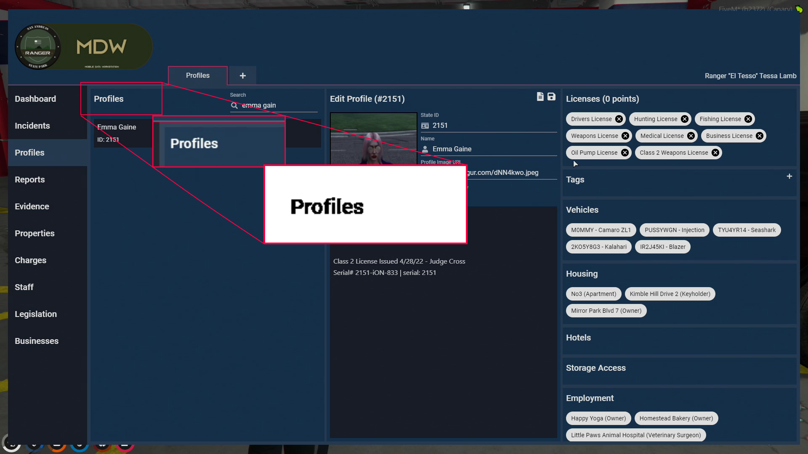
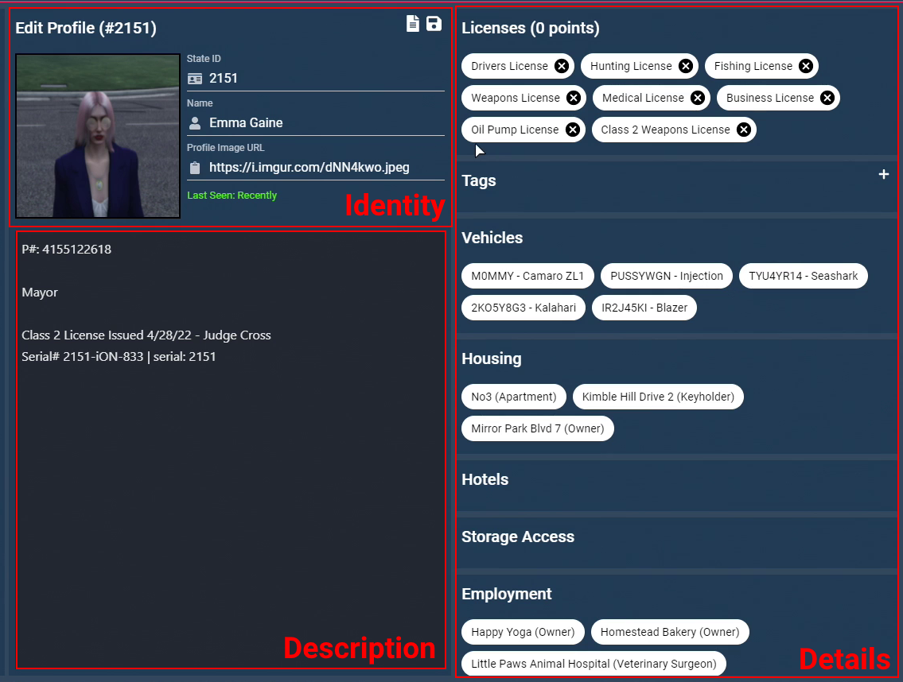
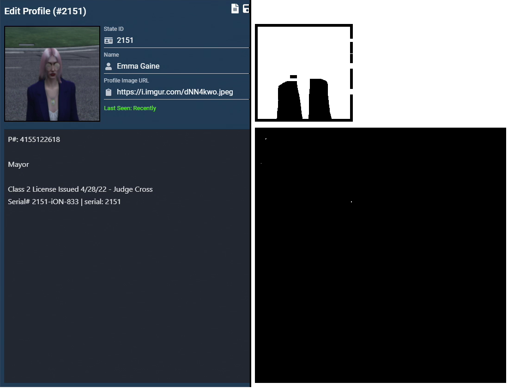
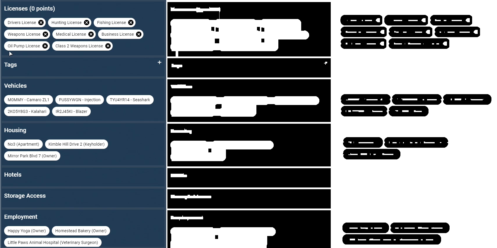
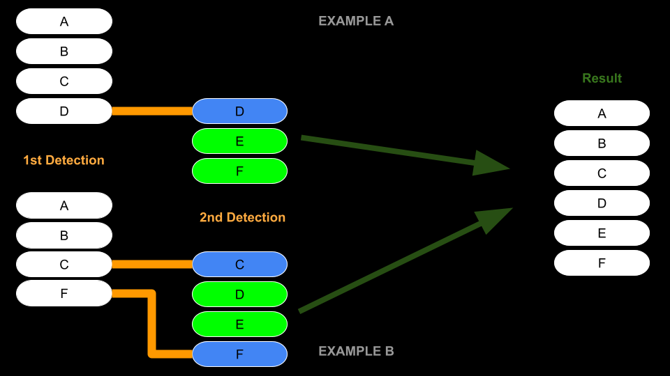

H2n9 - OMDW Project - Data Collection
Home
Background
The video game, Grand Theft Auto V, with the help of a dedicated modding community, has managed to evolve far past its original intended experiences.
Through a multiplayer modding framework called FiveM, users have managed to build large multiplayer roleplay servers centred around the GTA5 world.
One of these servers, known as NoPixel, has attracted many roleplayers, streamers, and built a massive community following.
The MDW exists as a tool on this server for law enforcement roleplayers to perform their duties.
It acts as a mobile terminal containing a database of all civilian profiles along with any incidents, reports, and evidence, that would be useful to government or police officials.
This allows law enforcement officers to utilise a centralised database of information that can assist in their investigating, making and, reporting an arrest.
The Project
The MDW is only accessible to individuals who are actively on the server.
RP Viewers are therefore restricted to only being able to follow along with what a specific streamer might show at any given time.
And with over 200 roleplayers actively playing at once and the 1000s of characters overall, it can be very difficult to keep up with the world's ongoings.
As such, the goal of this project was to extract useful data from the MDW, perform interesting metrics, and provide an external interface for other interested community members.

Example of an MDW Profile
Gathering the Dataset
In order to build this database of MDW data, I first needed to collect the dataset.
In this case, since I had no direct access to the MDW database, I had to resort to using alternative methods.
Thankfully there are many VODs from roleplay streamers containing MDW perspectives.
Therefore the only challenge here is how to efficiently detect and extract these frames.
Constraints
First off, lets mention some of the constraints I imposed early on.
- Only perform detections on Twitch.tv VODs
- While this isn't necessarily a strict requirement, the fact that the VOD video ids are sequential meant that it was much easier to sort them through time without having to perform API requests. Twitch.tv also happens to be where the majority of NoPixel RP streamers are, so this wasn't a major concession
- Only extract from VODs at 1080p
- This decision was straightforward, its the highest resolution available on Twitch.tv and I wanted to use as high quality data as possible. I had previously done some prototypes on 720p frames and had some issues with accurate text comprehension. At 1080p this issue would be mitigated.
- Only extract from streamers whose screen resolution is at 1080p
-
Being able to perform detections with constant coordinates and scales majorly simplifies the time, complexity, and development effort.
With the MDW contents scaling differently at higher resolutions; it was a major tradeoff to opt for only performing detections on 1080p sources. This significantly reduced the pool of available VODs.
Furthermore even if I overcame this issue, font sizes at these higher resolutions are visually smaller, and considering the prior constraint of only being able to use VODs at 1080p quality; text comprehension would suffer dramatically.
- Only make use of offline OCR detection methods
-
OCR (Optical Character Recognition) is the process of converting an image into text.
In a previous prototype version, I had made use of cloud OCR detections. Opting for the increased accuracy with the small cost overhead had made sense for these earlier versions.
However when re-evaluating for the increased complexity and significantly higher number of OCR detections required; the costs greatly outweighed the benefit from my perspective.
With the contraints understood we can begin exploring how the program works.
I opted to split the overall problem into two parts.
- MDW frame extraction.
- Frame processing and database composition.
We'll explore extraction first.
MDW Extraction from VODs
For the first problem of extraction, I needed a way to be able to stream VODs frame by frame. Luckily there is a very straightforward python library called VidGear that supports this exact use case.
I chose to have samples taken every second as it was a fair balance between frequency and computation cost/storage requirements.
Since we can assume that the MDW layout is proportionally the same no matter the content, we simply just need to look at the position where the left-most section header would be and perform an OCR detection.
This header will appear as 'Profiles' on the profiles page and 'Incidents' on the incidents page and as such can not only inform us if the MDW is on screen but also what page is currently being shown.
For OCR detections, I made use of the Tesseract OCR engine with the tesserocr python library.
To get the most accurate output, some image pre-processing needs to be done.
Tesseract works best with black text on a clean white background.
In this case, simply using a threshold to set all colors below a value to black and then inverting the image gives an ideal result.
Assuming a frame is validated as being an MDW frame, we then save that image and categorise them by the source VOD identifier.
Having them sorted this way makes it easier to compare and rule out outdated information later on (since VOD ids are sequential).

Extracing Page Types
Processing the MDW Frames
From the extraction phase we have a large collection of MDW frames and the type of page they are showing, whether it be a profile or incident in this case.
The program will now work through each frame and perform the actual extraction.
For now, we are only going to explore how the Profile extraction works but many of the principles I'll explain apply to Incident processing as well.
For reference, I will be referring to the different major sections as outlined below.

Verification
The first step of frame processing is to verify what profile we are working with.
Similarly to before we can look at a header but instead for the central section this time.
Each character on the server is assigned a unique State ID.
This allows them to be easily identified throughout the many systems that operate on the server, including the MDW.
Here, the State ID of the current profile is shown in the header; extracting it therefore allows us to verify the frame as being valid and also what profile is contained within this frame.
If the associated profile already exists in our database then only newer entries will be updated, otherwise a new profile will be created.
If the frame cannot be verified then it is skipped.
Sources
Each profile that is processed, tracks with it a sources file.
This associates the specific data entries that can be updated with a source frame and whether that entry is considered complete.
An entry is complete when the program can confirm it has read the entirety of said entry.
Having entries marked as complete allows these sections to be skipped over on repeated frames, which helps to reduce the overall computation time.
I broke sections down into the following associated source entries:
- Identity
- Description
- Details Sections:
- Licenses
- Tags
- Vehicles
- Housing
- Employment
- Priors
These sources are compared with the current frame, where the associated sections will only be updated if the frame is newer.
In cases where an entry is not considered complete, it will be updated on frames with the same source ID as well.
The only exceptions to this are the Description and Priors section where it is not easily possible to detect for completeness and as such, they will always be processed if visible.
This system allows a profile to be compiled from multiple frames where a specific section might be obscured or scrolled out of view entirely without compromising existing data.
Identity and Description Detection
With the frame verified and a valid state ID associated with it, we can now perform detections on the profile content.
Starting with the center section, I needed a way to determine where the description box starts and ends as it can appear differently depending on its content and scroll position.
Since the description box has a darker colored background, it is possible to isolate it and perform a box detection algorithm to look for its extents.
Box Detection
For box detection I utilised an algorithm described here and modified it to best suit my use-cases.
https://medium.com/coinmonks/a-box-detection-algorithm-for-any-image-containing-boxes-756c15d7ed26
The input for this algorithm works best on high contrast masks with as little noise as possible.
By adjusting both the brightness and contrast, and with some thresholding you get a box mask that looks something like this.
Running it through the algorithm returns a list of all box-like shapes detected in the mask.
With some checks for minimum and expected widths, we can filter the list down to one image containing only the description area.

Description Box Detection Mask
Identity Section
With the extents of the description box known, the Identity section can be assumed as being the remaining space above it, as long as that space is greater then a minimum size.
In cases where the section is scrolled so that only the description box is visible, the identity detection step will be skipped.
The identity section itself contains the profile's State ID, the persons name and a link to a profile image.
To extract this data I simply performed an OCR detection over the entire content and matched the headers with the content contained on the next line.
Since we already collected the State ID in the verification step, that header can be ignored here.
Compiling Description Detections
Compiling the different description detections into a single cohesive text is a significant challenge.
So I opted to sacrifice accuracy here for a solution that worked to an at least satisfactory level.
The solution I settled on was to look for matching lines in the source and new descriptions and define these as regions.
Regions that were found in the new detection then overwrite those that were matched in the source text with any new additions that they might include. Lines outside any regions are preserved as is.
In the end this method ending up being good enough. It suffered heavily from OCR detection inaccuracies since it expected exact line comparisons in creating the regions. And for any legitimate changes made to an existing line, the algorithm would either duplicate it if seen in a known region or completely ignore it otherwise.
Details Detection
To extract the profile details, I needed to separate the sections into individual images before I could do any extraction.
The box extraction algorithm is again very useful here.
With some processing to get a suitable mask image, running it through the algorithm returns each details section as a separate image.
From here I performed an OCR detection over the entire content to look specifically for any section headers.
This allowed me to not only determine what each section contained but also to prevent any box detection errors where multiple sections may have been incorrectly grouped into one image.
In some cases the Priors section content can extend to cover the full page, obscuring the header from view. Here I added a specific test to detect whether a subset of the visible tags are valid prior tags.
If the test passes then the full section is treated as a priors section and data is extracted as normal.
Otherwise, when no valid header is detected, the image is ignored.
Now with each section separated and its type known, another box detection is done to specifically extract the section's tags.
Each of these individual tag images then has its text read and interpreted into its valid format.

Details Section and Tag Extraction Masks
Upon the first detection, details sections are read and saved directly. On subsequent detections, a section is only updated if it is not considered complete or if the detection is from a new source.
Section completeness is assumed when the next section is also visible in the same frame.
In cases where the employment and prior sections are not complete and the section only has a partial detection then entries can be updated through the 'complex pathway'.
These two sections were chosen explicitly because they are the most frequently occluded, and the contained tags are sorted.
The 'Complex Pathway'
The 'complex pathway' attempts to combine the existing known entries with entries found in subsequent detections.
This is done in order to make sure that sections that are scrolled differently and show more/different content are properly combined with the existing content.
This method works off of the assumption that the incoming entries are sorted in some defined way.
Both the Housing and Employment sections happen to be sorted alphabetically while the Priors section is sorted by an internal ID assigned to them.
Recording the order in which these priors appears allowed me to be build a list that I can use to lookup the correct sorting.
The first step is to detect the first and/or last tag that matches between the existing and new entries.
This defines the region of tags that can be changed; all others are preserved.
Existing tags within this region are then replaced with the new detections - tags that no longer exist are removed and new ones are appended.

Complex Pathway Diagram
Dataset Building
With all usable data extracted from the profile, it is compared with any existing data and compiled into an individual JSON file.
Storing each profile individually in an intermediate stage makes it significantly easier to perform corrections and allows me to easily track a ground truth profile source separate from any that might appear in the final database.
{
"StateID": 2151,
"Name": "Emma Gaine",
"ImageURL": "https://i.imgur.com/dNN4kwo.jpeg",
"Description": "P#:4155122618\n\nMayor\n\nClass 2 License Issued 4/28/22 - Judge Cross\nSerial# 2151-iON-833 | serial: 2151",
"Vehicles": [
"Camaro ZL1",
"Injection",
"Seashark",
"Kalahari",
"Blazer"
],
"Housing": [
{
"Name": "No3",
"Type": "Apartment"
},
{
"Name": "Kimble Hill Drive 2",
"Type": "Keyholder"
},
{
"Name": "Mirror Park Blvd 7",
"Type": "Owner"
}
],
"Employment": [
{
"Name": "Happy Yoga",
"Role": "Owner"
},
{
"Name": "Homestead Bakery",
"Role": "Owner"
},
{
"Name": "Little Paws Animal Hospital",
"Role": "Veterinary Surgeon"
}
],
"Licenses": [
"Drivers License",
"Hunting License",
"Fishing License",
"Weapons License",
"Medical License",
"Business License",
"Oil Pump License",
"Class 2 Weapons License"
],
"Tags": []
}
Example of an Extracted Profile
-Sources.json-
{
"Identity": "0",
"Identity_Complete": true,
"Vehicles": "1488461857",
"Vehicles_Complete": true,
"Housing": "1488461857",
"Housing_Complete": true,
"Hotels": "1488461857",
"Hotels_Complete": true,
"Employment": "1488461857",
"Employment_Complete": false,
"Licenses": "1488461857",
"Licenses_Complete": true,
"Tags": "1488461857",
"Tags_Complete": false
}
-Log.txt-
-----2022-06-27_19:00:23-----
> Operating on '0/frame349320.png' <
State Id: 2151
Updated entries:
'Identity'
'Vehicles'
'Housing'
'Hotels'
'Employment'
-----2022-06-27_20:52:49-----
> Operating on '1488461857/frame349260.png' <
State Id: 2151
Updated entries:
'Licenses'
'Tags'
'Vehicles'
'Housing'
'Hotels'
'Employment'
-----2022-06-27_20:52:51-----
> Operating on '1488461857/frame349320.png' <
State Id: 2151
Updated entries:
'Employment'
-----2022-06-27_20:52:52-----
> Operating on '1488461857/frame349380.png' <
State Id: 2151
Updated entries:
'Licenses'
'Employment'
Associated Source and Log File
Following this stage, a final script is used to compile all the profiles into a single dataset.
This script also does some additional processing like separating out both properties/businesses into their own databases and merging any priors found from incident reports that might be missing in the profile due to not being detected.
And with that, the entire database is complete and ready for use.
Evaulating the Results
Collection Results
Over a 2 month period of sporadic data collection. I accumulated just over 125,000 MDW specific frames from around 100 VODs.
After processing, 579 unique MDW profiles were extracted with over 2000 additional updates computed.
Additionally, around 850 complete incidents were extracted with a further 3000 incomplete incidents collected.
The Issues and Potential Improvements
- OCR Detection Inaccuracies
-
While accuracy was generally pretty good, when running tens of thousands of detections, some mistakes will occur.
Factor in some rare occurrences like occluded text from a mouse cursor or mid-transition captured frames, then these miss-detections become even more significant.
To correct for these errors, I would check over every profile that had been changed during a processing run and manually make any corrections.
Obviously, this was a pretty monotonous process.
A pretty straightforward improvement here would be to add a spellcheck pass to correct any immediate spelling errors before writing.
However, this wouldn't be very effective for many of the details sections where the detected entries can be non-words.
So another step here could be to automatically match new detections with previously known entries.
In fact, I had already put this in place for the priors section specifically but did not have time to implement it for all sections alike.
Despite even these measures, a detection inaccuracy on a State ID would still be a critical failure requiring manual intervention.
- Profile Tags Section
-
The Tags section entries would fail on almost all detections due to being differently colored compared to the standard black-on-white tags.
Both the box extraction and tag reading steps were not designed to handle colored tags.
A potential solution would be to attempt to remap the colors of the tags to be the standard format but I expect this would come with some annoying hidden challenges.
In the meantime I have been manually adding the missing tags to each profile.
- Manual Interventions
-
Due to the issues stated previously, every VOD that is processed also needs its results manually verified.
With small batches of VODs taking around 24 hours to collect and process, I have had to select which VODs to extract and process manually to best make use of the program's and my own time.
Until this manual step is no longer necessary, the entire collection process cannot be fully automated to run on all VODs.
The Website
I built a website inspired by the MDW's design to present the data and allow the wider community to access it.
Check it out here:
https://h2n9.github.io/OMDW/